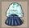

คำถามปลีกย่อยขอให้มาตั้งในกระทู้นี้คะ ตอบวันต่อวันคะ
 โดย ECO » จันทร์ 05 พ.ย. 2007 6:02 am
โดย ECO » จันทร์ 05 พ.ย. 2007 6:02 am
Leonardo เขียน:สวัสดีคับ เคยเห็นสัตว์เลี้ยงที่เป็นตัวชุดเกราะดำๆ อะคับ ไม่รู้เคยมีคนถามไปยังหามะเจอเยย แล้วก็มะใช่ทหารรับจ้างนะคับ มันเป็นตัวอะไร แล้วเอามาจากไหนคับ มีใครเคยเห็นแล้วรู้จักมั่งคับ
เป็นสกิล ของเรโครเเมนเซอครับ สกิลที่ว่าคือ สกิล summon Ghost เลเวลจะสามารถเรียกผีตัวที่คุณเห็นออกมาคับ
- ECO
- Dark Warrior

- โพสต์: 276285
- ลงทะเบียนเมื่อ: พุธ 26 ต.ค. 2011 9:31 pm
 โดย ECO » จันทร์ 05 พ.ย. 2007 6:04 am
โดย ECO » จันทร์ 05 พ.ย. 2007 6:04 am
NaTee เขียน:Pirate Bomber
มันอยู่ที่ไหนรึท่าน = =ยังไม่เคยเห็นเลย เห็นว่ามีเควสโจมตีเวล 64 อยู่น่ะ
รับเควส เเล้วมันจะมีทางเพิ่มครับ จะเขียนว่าเกาะโจนสลัด ตรงทางลับอ่ะ จะเปลี่ยนจาก กาะไม่เข้าฝ่ายไดเป็นโจนสลัดเเทน
- ECO
- Dark Warrior
- โพสต์: 276285
- ลงทะเบียนเมื่อ: พุธ 26 ต.ค. 2011 9:31 pm
 โดย ECO » จันทร์ 05 พ.ย. 2007 1:31 pm
โดย ECO » จันทร์ 05 พ.ย. 2007 1:31 pm
jumper009 เขียน:Leonardo เขียน:สวัสดีคับ เคยเห็นสัตว์เลี้ยงที่เป็นตัวชุดเกราะดำๆ อะคับ ไม่รู้เคยมีคนถามไปยังหามะเจอเยย แล้วก็มะใช่ทหารรับจ้างนะคับ มันเป็นตัวอะไร แล้วเอามาจากไหนคับ มีใครเคยเห็นแล้วรู้จักมั่งคับ
เป็นสกิล ของเรโครเเมนเซอครับ สกิลที่ว่าคือ สกิล summon Ghost เลเวลจะสามารถเรียกผีตัวที่คุณเห็นออกมาคับ
ขอบคุณมากคับ แต่มันมะใช่ตัวนี้นะคับ มันเป็นชุดเกราะดำๆ แล้วคอยเดินตามเหมือนเป็นสัตว์เลี้ยงเลย
Osix เขียน::D ไหนๆกขอโพสเพิ่มเติมเรื่อง Summon ด้วยล่ะกันครับ
Summon Ghost ได้ตอน job lv 7
คำอธิบาย Summon Undead Monster ประเภทของ Monster นั้น จะเปลี่ยนไปตาม Skill LV
(ขอยืมภาพจากบอร์ด Warlock ก่อนน่ะครับเด๋วมีเวลาจะไปแคปภาพมาเอง)
LV1 Summon mummy
ใช้ mp 20
โจมตีเร็ว แต่เบา dmg~90-100 ติดคริบ่อย Cri 160-170 หลบไม่ดี
มี Skill slow logic
วิเคราะห์ ไม่เหมาะกับการใช้เก็บเวเวลเท่าไรถ้าใช้เอามันก็ไม่ว่า
LV2 Summon spectre
ใช้ mp 24l
โจมตีกลางๆ ตีเบา dmg~ 90-100 แต่ Avoid สูงมากๆ มี Skill Silence
วิเคราะห์ ใช้เก็บเลเวลได้ีดีพอควรแต่โดนเวททีมีจุกถ้า Silence ติดพวกมอนบ้าสกิลจะกลายเป็นหมูในอวยทันที
ีLV3 Summon dead
ใช้ mp 28
โจมตีช้า แต่แรง dmg~ 130-200 หลบไม่ดี ตายง่าย มี Skill posion
วิเคราะห์ ตีแรงก็จริงแต่ def น้อยมากโดนไม่กี่ที่ก็ดับ -*-
LV4 Summon skeleton
ใช้ mp 32
โจมตีค่อนข้างเร็ว แรง dmg~150-180 ถึก mdef เยอะ
มี Skill dark arrow~ dmg 340-410
วิเคราะห์ ตัวโปรดผมเลยยิงแรง ถึก ใช้เก็บเลเวลได้ีดีเลย
LV5 Summon armor
ใช้ mp 36
โจมตีค่อนข้างเร็ว แรง dmg~150-170 cri ที 230 ถึกมาก เลือดเยอะ แต่ mdef ต่ำ
มี Skill War cry
วิเคราะ์ห์ เป็นตัวที่ใช้แท็งได้ดีมากแต่จะเสียที่ mdef นี้แหละ -*-
ต่อไปตั้งเป้าว่าจะอัพ life take อ่ะครับเป็นยังไงเด๋วมารายงานน่ะครับ


ไม่ใช่ตัวในเลเวล 5 นี้คับ มันจะเดินและมีผ้าคลุม เป็นชุดเกราะสีดำๆ หน่อย มีคนบอกว่าเป็น
สัตว์เลี้ยงของอาชีพวิสาดด้วยไม่รู้มั่วป่าว หาข้อมูลไม่เจอเลย-*-
- ECO
- Dark Warrior
- โพสต์: 276285
- ลงทะเบียนเมื่อ: พุธ 26 ต.ค. 2011 9:31 pm

 โดย ECO » อังคาร 06 พ.ย. 2007 11:00 am
โดย ECO » อังคาร 06 พ.ย. 2007 11:00 am
NaTee เขียน:NoNShall เขียน:สูตรดำนี่ซื้อที่นี่หรอครับ
ขายอยู่ในโรงหนังดาวทาวครับ ต้องมีคาเวียไปให้ npc ด้วยเค้าถึงจะขายให้นะ
ส่วนกาเกงนี่ไม่รู้นะ
กางเกงสูทดำก็ที่เดิมแหละค่ะ Theater 2 (เดินลงไปดาวทาวจะเห็นโรงหนังสี่ทิศ โรงสองอยู่ทิศตะวันออกเฉียงเหนือค่ะ)
ต้องเอา Kaboir ไปแลกเช่นเดิม ส่วนใหญ่จะขายแต่เสื้อ น๊านนนนนนนนนนานนนนน ทีจะออกมาเป็นกางเกง กว่าจะสุ่มได้ไม่คุ้มค่าคาเวีย
เพราะงั้นซื้อเอาเถอะค่ะ = ="/ ตามตลาดราคาเคยขายเคยเห็นตกราว ๆ 7-9k(กางเกงนะ) เสื้อก็เสียคาเวียไปชิ้นนึงไปซื้อได้เลยค่ะ (DC ได้)
Asakura เขียน:พวกเสื้อนักเรียนโรงเรียนต่างๆที่ขายกัน500kนี่
ต้องเปิดกล่องได้มาอย่างเดียวสินะครับ?
อยากทราบว่าได้จากกล่องอะไร
เสื้อนร.ญเราเคยได้จากกล่องแดงรึกล่องเขียวดันปลาค่ะ
รายละเอียดเสื้อนร.ญจากกล่องต่าง ๆ
ลายเช็ค ได้จาก คอนเทน 2 กล่องแดง 2



กระโปรงน้ำเงิน ได้จาก คอนเทน 2 กล่องแดง 4,5 (หาง่าย ๆ ก็ดันปลา)ได้จาก คอนเทน 2 กล่องแดง 4

ได้จาก คอนเทน 1,2 กล่องแดง 4,5

- ECO
- Dark Warrior
- โพสต์: 276285
- ลงทะเบียนเมื่อ: พุธ 26 ต.ค. 2011 9:31 pm
 โดย ECO » อังคาร 06 พ.ย. 2007 11:58 am
โดย ECO » อังคาร 06 พ.ย. 2007 11:58 am
Sukori เขียน:ขอลิ้งค์ที่เป็นอีเวนท์ของเมือง Morg ที่เกี่ยวกับการลดราคาบัตรเข้าหอแสงหน่อยค่ะ
เนื่องจากกระทู้ใหม่ๆ ดันตกหมด ค้นหาก็ไม่เจอ
วันนี้ในหนังสือของ...(compgamer หรือ...อะไรอีกอย่างนี้แหละ) มีบอกว่า มีบัตร morg ตลอดชีพ ซื้อที่สมาคม พ่อค้า เมือง morg ด้วยแหละ ราคา 4000 กว่า....ไปเอาข้อมูลมาจากไหนฟะ
- ECO
- Dark Warrior
- โพสต์: 276285
- ลงทะเบียนเมื่อ: พุธ 26 ต.ค. 2011 9:31 pm
Re: *-
 โดย ECO » อังคาร 06 พ.ย. 2007 12:13 pm
โดย ECO » อังคาร 06 พ.ย. 2007 12:13 pm
jumper009 เขียน:
ผมคิดว่าตัวนี้เสียอีก - -
ถ้ายังไง ก้อขอโทดด้วยล่ะกัน คับ
ใช่แล้วครับ มันคือตัวนี้ ไปเห็นมาอีกทีละ ของจริงมันสีดำๆ แต่ในรูปสกิลดันเป็นสีน้ำเงิน
เลยทำให้เข้าใจผิดพลาด สรุปคือ เลเวล 5 Summon Ghost ของ Necromancer คับ ชื่อ Summon Armor นี่เอง-*- นึกว่าเป็นสัตว์เลี้ยงตัวใหม่ เหอๆๆ
เท่มากมาย
ขอบคุณมากงับ
ส่วนฝึกวัวให้ลองไปหาโรงเรียนฝึกครับ จะมีคำสั่ง Go! ให้ด้วยในโรงเรียนฝึก ถ้าฝึกไป
เรื่อยๆ จนมันเก่งมันจะตีแรงขึ้นครับ แล้วแต่ความพยายาม-*- เรื่องพูดมันก็ร้อง มอๆ มั้ง
เออ แล้วก็คลาสสองของสายอาชีพ BP จะมีคำสั่ง Go! สั่งสัตว์นอกโรงเรียนได้ครับ หรือ
อาชีพ striker ก็มี เควสหนอน ถ้าฝึกจนเต็มหลายๆ ค่าแล้วก็เอาสัตว์ไปอัพเกรด(พัฒนา,ล้ม)
กับคุณปู่ได้ครับ
- ECO
- Dark Warrior
- โพสต์: 276285
- ลงทะเบียนเมื่อ: พุธ 26 ต.ค. 2011 9:31 pm
 โดย ECO » พุธ 07 พ.ย. 2007 9:52 am
โดย ECO » พุธ 07 พ.ย. 2007 9:52 am
crosssilver เขียน:คฑา70ของพระใช้อะไรทำแล้วทำที่ไหนครับ
ขอบคุณครับ
:oops: อ่านข้อมูลเพิ่มเติม + ส่วนผสมได้ :arrow: ที่นี่ค่ะ
~ ------------------------------------------------------------------------------------------ ~
pantherforce เขียน:หมวกเขียวๆของarcherหาได้ที่ไหนอะ ใครรู้ช่วยตอบที
:oops: ได้จากกล่อง Wood Box 3 , Treasure Box 4 , Container Box 4 ค่ะ
- ECO
- Dark Warrior
- โพสต์: 276285
- ลงทะเบียนเมื่อ: พุธ 26 ต.ค. 2011 9:31 pm
 โดย ECO » พุธ 07 พ.ย. 2007 3:42 pm
โดย ECO » พุธ 07 พ.ย. 2007 3:42 pm
chanat1 เขียน:Sukori เขียน:ขอลิ้งค์ที่เป็นอีเวนท์ของเมือง Morg ที่เกี่ยวกับการลดราคาบัตรเข้าหอแสงหน่อยค่ะ
เนื่องจากกระทู้ใหม่ๆ ดันตกหมด ค้นหาก็ไม่เจอ
วันนี้ในหนังสือของ...(compgamer หรือ...อะไรอีกอย่างนี้แหละ) มีบอกว่า มีบัตร morg ตลอดชีพ ซื้อที่สมาคม พ่อค้า เมือง morg ด้วยแหละ ราคา 4000 กว่า....ไปเอาข้อมูลมาจากไหนฟะ
มีจิงป่ะ-*-แล้วไอพ่อค้าหน้าเลือดที่ขายใบละ5000ตรงหน้าทางเข้าเมืองนั่นตลอดชีพป่ะ-*-
- ECO
- Dark Warrior
- โพสต์: 276285
- ลงทะเบียนเมื่อ: พุธ 26 ต.ค. 2011 9:31 pm
 โดย ECO » พุธ 07 พ.ย. 2007 3:45 pm
โดย ECO » พุธ 07 พ.ย. 2007 3:45 pm
Yami-Ed เขียน:ขอถามเกี่ยวกับสัตว์เลี้ยงหน่อยงับ
พอดีเลี้ยงวัวเอาไว้ เมื่อไรมันจะพูด หรือ ตีแรงๆได้บ้าง หรือว่าเฉพาะแมวเท่านั้นสีพูดได้นะ
=w= และก็ฝึกสัตว์นี้ไม่มีสกิลให้มันไปตีมอนเตอร์เลย มีแต่หยุดให้มอนเตอร์ตี
เราต้องฝึกวัวนานแค่ไหนเนี้ย หรือว่าต้องไปทำเศวส หนอน หรือ ถึงจะอัพได้นะ
วัวพูดได้นะแต่เปงภาษาวัว5555 Moo~
อยากให้วัวตีแรงก้อไปฝึกที่โรงเรียนบ่อยๆสิครับ(อ๊ะ!อย่าถามนะว่าฝึกที่ไหน"ค้นหา"เองนะ อิอิ)
ส่วนเรื่องความนานนี่ตอบไม่ถูก มันเพลินๆน่ะ
- ECO
- Dark Warrior
- โพสต์: 276285
- ลงทะเบียนเมื่อ: พุธ 26 ต.ค. 2011 9:31 pm
ผู้ใช้งานขณะนี้
่กำลังดูบอร์ดนี้: ไม่มีสมาชิก และ บุคคลทั่วไป 1 ท่าน